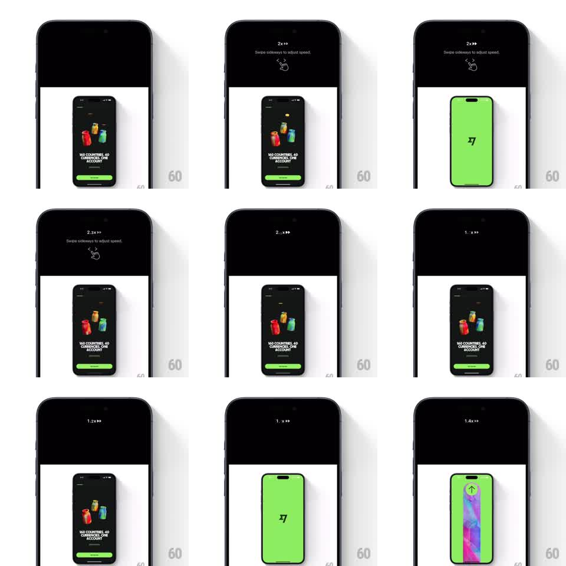

Media
Frame-by-frame

Rebuild this interaction 1:1: Telegram's press-and-slide playback speed - hold the fast-forward button and a HUD appears; slide your finger sideways and the playback speed tracks in real time, the value updating with every pixel.

Rebuild this interaction 1:1: Telegram's press-and-slide playback speed - hold the fast-forward button and a HUD appears; slide your finger sideways and the playback speed tracks in real time, the value updating with every pixel.
## Integration
Integration: stack-agnostic spec - springs given as stiffness/damping, timed motions as duration + curve; map every value to your framework and animation library of choice.
## Scene
Full-screen video player. Top center during the gesture: a HUD showing the current rate ("2x>>") with the hint "Swipe sideways to adjust speed" and a small hand icon. The video keeps playing underneath throughout.
## Motion spec
Pattern: press-hold + drag-scrub, continuous.
- Press and hold the >> affordance: playback jumps to 2x and the HUD fades/slides in from the top (150ms).
- Drag horizontally: the rate maps linearly to finger x relative to the hold point (~0.1x per 12px), clamped roughly 0.5x-2.5x, and the HUD value updates every frame ("1.2x>>", "2.3x>>").
- The video's actual playback rate follows the HUD value live - no lag between label and audio/video.
- Slide past the top of the range... the value clamps; the HUD stays put, it does not drift off.
- Release: HUD fades out (150ms) and playback returns to 1x.
- Sliding up beyond a threshold locks the speed: HUD confirms the lock, finger can lift without reverting.
## Calibration
- One decimal of precision on the label; integers alone feel steppy, two decimals feel like a spreadsheet.
- Rate changes must be smooth (ramp over ~100ms) - instant rate steps make audio chirp.
## Reduced motion
Gesture unchanged (it is the feature); drop the HUD slide-in for a simple fade.
## Don't miss
- The HUD value and the true playback rate can never disagree - that mismatch is the whole trust of the control.
- Keep the video visible and playing under the HUD; never pause to "show" the speed change.